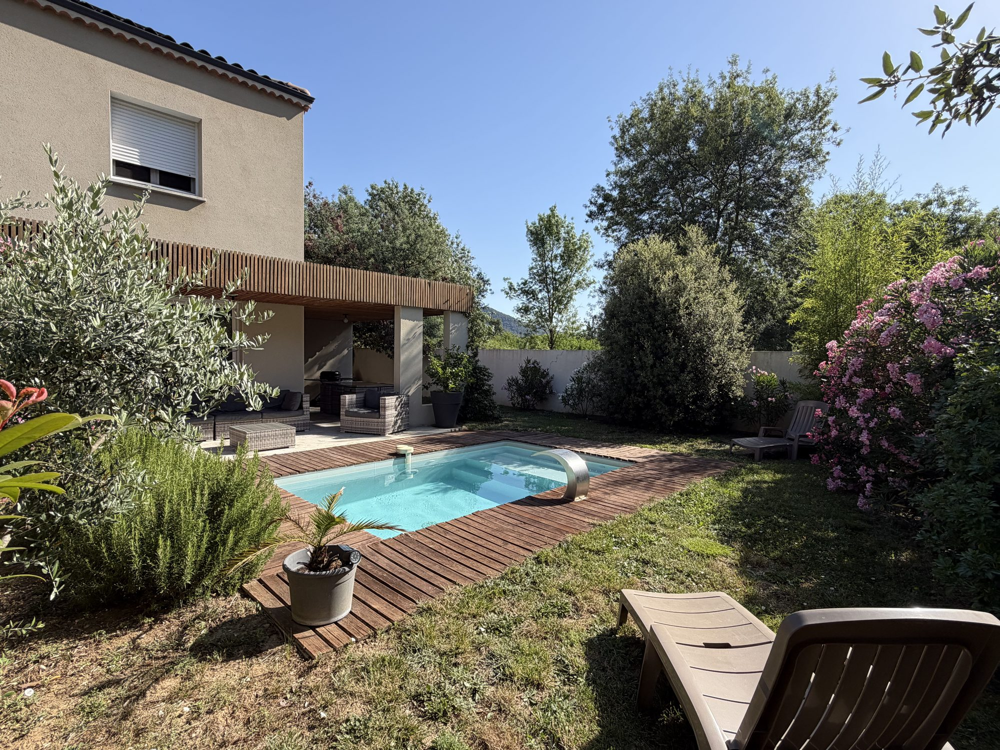

Galerie



Située à Flaviac, à seulement 8 km de la sortie A7 Loriol / Privas, Les Cabritas accueille jusqu'à 4 voyageurs dans un environnement calme et résidentiel. La villa dispose de deux chambres, d'une piscine privée, d'une terrasse couverte, de la climatisation et de la fibre.

Site naturel emblématique de l'Ardèche.
Réplique de la célèbre grotte classée à l'UNESCO.
Un des plus beaux villages de France.
Itinéraires idéaux pour les cyclistes.
Thermes, marchés et douceur de vivre.
Source de la Loire et panoramas exceptionnels.
Les Cabritas ont été pensées pour les voyageurs à la recherche de calme, de confort et d'authenticité. Les fêtes, anniversaires et événements ne sont pas autorisés. Le respect du voisinage est une condition essentielle du séjour. Les animaux ne sont pas admis. Toute réservation implique l'acceptation du règlement intérieur.
Je suis Axel TATO LEON et je serai votre interlocuteur privilégié avant et pendant votre séjour.
Passionné par l'Ardèche, je serai ravi de vous orienter vers les plus beaux sites, restaurants, marchés et activités de la région afin que votre séjour soit inoubliable.
Email : bonjour@lescabritas.fr
Téléphone : +33 7 83 18 20 16
Téléphone : +33 6 50 79 89 80